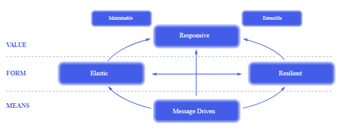
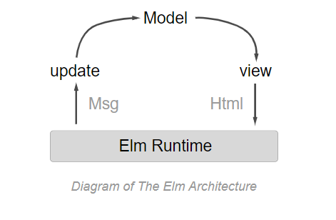

class: center, middle # Frontend Architekturen Fabian Husemann --- # Inhalt - Was ist eine Frontend Architektur - Micro Frontend - Reactive - Reactive Programming - Functional reactive Programming - Verschiedene Architekturen - Redux - MobX - Vuex - Model View Update - SAM - Model View Intent - Vergleich - Vor- und Nachteile --- # Was ist eine Frontend Architektur - Kollektion von Tools und Prozessen - zur Verbesserung von Frontend Code - für einen effizienten Arbeitsablauf - häufig unterschätzt! -> „Das Frontend kloppen wir am Ende einfach irgendwie drauf.“ - moderne Frontend-Systeme haben einen enormen Funktionsumfang - hohe Anforderungen: - Skalier- und Wiederverwendbarkeit - Bedienkomfort - Unterschiedliche Auflösungen - schnelle/flüssige Darstellung - asynchrone Kommunikation - ... und viele mehr - schon kleine Programmfehler führen zu Benutzerfrustration <!-- Frontend Architektur https://nilshartmann.net/posts/microfrontends/#:~:text=Frontend%2DArchitektur%20unterscheidet%20sich%20in,UI)%20sind%20Teil%20des%20Aufgabenfelds. --> --- # Reactive Programming - Reactive Programming ist ein Programmierparadigma (Programmierstil), dass sich bei der Datenverarbeitung an Datenflüsse orientiert. Dabei werden Änderungen in den Datenflüssen automatischen propagiert. - Observer-Pattern - Ermöglicht ein System ohne einen Zustand auszukommen. - Soviel Asynchronität wie möglich. - Event-driven - beliebten Bibliotheken, die die reaktiven Programmiertechniken auf der JVM unterstützen: - Akka Streams, Ratpack, Reactor, RxJava, and Vert.x --- # Reactive Programming - Die Funktionen und der auszuführende Code werden Entkoppelt, was dazu führt, dass die Betriebssystemebene weniger Kontextwechsel durchführen muss und eine bessere Performance erreicht wird. - Die Entkopplung von geschriebenen Funktionen und ausgeführtem Code führt zu einem erhöhten Schwierigkeitsgrad beim Lesen und Schreiben des Codes. - Warum Reactive Programming? - Der Anwendner erwartet eine im schnelle Reaktionszeit und 100%ige Verfügbarkeit von unserer Website - Mit Reactive Programming kann man schnell und Resourcen sparend interagieren. - bessere Aufteilung beim Programmieren - Nachteile? - speicherintensiv durch viele Datenströme - Denkweise beim programmieren ändern. --- # Reactive System  - Responsive - Das System reagiert nur, wenn Angefragt und rechtzeitig. - schnelle und konsistente Reaktionszeiten. - Resilient - Das System bleibt reaktionsfähig, trotz eines Fehlers. - Wird durch Replikation, Eindämmung, Isolation und Delegation erreicht --- # Reactive System - Elastic - bleibt bei wechselnder Arbeitsbelastung reaktionsfähig. - Vorraussetztung: Kein Flaschenhals bei den Komponenten - Message Driven - asynchrones message-passing - Die "Grenze" der Komponenten, um eine lose Kopplung und die Isolation zu gewährleisten. - Non-Blocking Kommunikation ermöglicht es, Resourcen nur frei zugeben, wenn die Komponente aktive ist. --- # Event-driven vs. message-driven - Unterschiede - Nachrichten sind grundsätlich an wen gerichtet und Ereignisse nicht. -> Nachrichten haben ein klares Ziel und Ereignisse sind Fakten, die andere Beobachten können. - Belastbarkeit ist schwerer zu erreichen durch die kurzlebigkeit der Ereignisverbrauchsketten - Nachrichten werden hauptsächlich im Netzwerk verteilt und Ereignisse Lokal - message-driven ist aufwändiger zu Programmieren als event-driven - Wann benutze ich was? - Event-driven wird benutzt um Fakten(Ereignisse) darzustellen. - Message-driven wird als starkes Kommunikationswerkzeug gebraucht. --- # Functional programming - Ein Programmierstil der sich auf Funktionen Fokussiert - pure functions - ohne SIDE Effect - immutable Inputs - müssen einen Rückgabewert haben, da sie sonst nichts tun würden. - Input Datentyp = Output Datentyp --- # Functional programming - Der Zustand der Anwendung fließt durch die Funktionen. - Bei der objektorientierten Programmierung wird der Zustand der Anwendung normalerweise gemeinsam genutzt. - Wiederverwendbarkeit durch High-Order-Funktionen (mit Generics) --- # Functional reactive programming (FRP) - Kombination aus functional programming und reactive programming - Warum reactive programming? - asynchrone Datenströme -> schnelle Reaktionszeit - Warum functional programming? - Erhöhte Abstraktionsebene - Bietet Funktionen zum Kombinieren, Erstellen, Zuordnen und Filtern beliebiger Datenströme - flexibel, lose gekoppelt und skalierbar. --- # Redux <img style="float: right;" src="img/redux.png"> - Predictable-State-Container - Eine Bibliothek, um sein Anwendungszustand zu managen Benutzt zwei Pattern: - Command Query Responsibility Segregation (CQRS) - States können nur durch Commands erfolgen. - Die Commands werden am Store dispatched - Event Sourcing - Abfolge von Commands die jeder Zeit abgespielt werden kann. --- # Redux - Store - Der Store ist ein Speicher, wo der gesamte Zustandsbaum der Anwendung hinterlegt ist. - Kann von jeder Komponente in der Anwendung verwendet werden. - Die Zustände können nur durch Actions verändert werden. - Action - Einfaches Objekt mit den beschriebenen Änderungen der Daten im Speicher. - Benötigt ein Attribute "type" zur Identifizierung der Action. - Dispatch - Sendet die Action an den Store. - Die einzige Möglichkeit ein Zustandswechsel auszulösen. - Reducer - Gibt als Reaktion auf gesendete Actions den neuen Zustand der Anwendung zurück. --- # Redux 3 Prinzipien: - Single source of truth - Globale State im Store als Objektbaum - State is read-only - NUR die Actions können einen State ändern. - Changes are made with pure functions - Reducer sind pure functions - Input: Vorheriger Zustand und die Aktion - Output: Nächster Zustand --- # Redux - Vorteile - Wenig Überraschung den State zu halten - Gut Testbar - Übersichtlich auch in großen Projekten - Nachteile - Hoher Programmieraufwand - mittelhoher Prozessaufwand, da die Reducer durchgelaufen werden. --- # MobX - Zustandsverwaltung - React und MobX in Kombination - React rendert den Zustand der Anwendung in einen Baum mit renderbaren Komponenten - MobX bietet Mechanismen zum Speichern und Aktualisieren von Zuständen Vorteile: - wenig Code - einfach zu lernen - Objektorientierte programmierung kann auch verwendet werden Nachteile: - Zu viel Freiheit - Schwer zu Debuggen --- # MobX <img style="width:100%;display: block;margin-left: auto;margin-right: auto; float: right;" src="img/mobx.png"> - Action - wird von Events aufgerufen - nur Action kann den State beeinflussen - State - Observable - keine Redundanz - keine abgeleiteten Daten - Computed values - Werte vom State - über pure functions - Reactions - Updatet die UI --- # Vuex <img style="width: 20%; float: right;" src="img/vuex_logo.png"> - Zustandsmanagement Pattern mit Bibiliothek für Vue.js - Einen Zustandsbaum - Event-driven Insperiert von Redux Wann benutzt man es? - Bei mittelgroß bis großen Anwendungen - Für eine besseres Zusandshändling außerhalb von Vue Komponenten --- # Vuex - State - Zustand der Anwendung - View - Visuelles Template für die Komponente - Vue Komponente - mehrere Views können durch einen State verändert werden. - Action - führ eine Mutation aus - Mutation - wie verändert sich der Zustand <img style="width:55%;display: block;margin-left: auto;margin-right: auto;" src="img/vuex.png"> --- # Model View Intent - Entwurfsmuster für reactive und functional programming - Kommt aus dem Bereich Android Programmierung - Kerngedanke von Model View Controller <img style="width:50%;display: block;margin-left: auto;margin-right: auto; float: right;" src="img/MVC.png"> <br /> Controller von MVC passt nicht zur reaktiven Programmierung - Der Controller manipuliert die View --- # Model View Intent - Ziel ist ein unidirektionaler Datenfluss mit Unveränderbarkeit von Zuständen <img style="width:70%;display: block;margin-left: auto;margin-right: auto;" src="img/unidirektionalerDatenfluss.png"> --- # Model View Intent Wie setzt man nun diesen Kreislauf zusammen? - Kettenfunktionen mit functional programming: <img style="width:60%;display: block;margin-left: auto;margin-right: auto;" src="img/modelviewintent.png"> - mit reactive programming <img style="width:50%;display: block;margin-left: auto;margin-right: auto;" src="img/modelviewintent-ablauf.png"> Die View generiert "Events" (Observed Pattern) und übergibt diese intent(). --- # Model View Intent - intent() - nimmt die Eingaben des Benutzers entgegen (bspw. Klick auf UI-Element) - transformiert die Eingabe zu etwas das für die Funktion model() verständlich ist - bspw. Das einfache setzen eines Strings im Model, es könnte aber auch die Transformation in etwas komplexeres wie eine Datenstruktur für Aktionen oder Befehle sein. - model() - nimmt Ausgabe von intent entgegen um das Modell zu manipulieren - die Ausgabe dieser Funktion ist ein neues Modell - wir wollen unveränderlichkeit und daher nicht das bestehende Modell bearbeiten - view() - nimmt das Modell der model() Funktion entgegen und zeigt diese an. --- # Model View Intent Vorteile: - Ein unidirektionaler und zyklischer Datenfluss. - Ein konsistenter Zustand während des Lebenszyklus von Views. Nachteile: - Lange Lernkurve - In unserem workflow existieren zwei Modelle --> das welches die View anzeigt und das welches wir bauen in model() --- # SAM - State-Action-Model Konzepte von React - Event-driven - reactive programming Basiert auf TLA+: - TLA+ ist eine formale Spezifikationssprache - Es wird zum Entwerfen, Modellieren, Dokumentieren und Überprüfen von Programmen verwendet, - Zustandsmanagement Grundprinzip: - Zustandsmutationen sind das wichtigste im Model --- # SAM - State-Action-Model Aufbau: - Action - werden von Events ausgelöst - mutiert Model - Model - beihaltet die Logik des Programmes - Berechnet den nächsten Zustand - "Lernt" den neuen Zustand - State - berechnet den nächsten Altionen - View - Zeigt den aktuellen Zustand an Gute Implemtierung: - unidirektionalen Datenfluss - ein einziger Zustandsbaum - pure functions --- # SAM - State-Action-Model <img style="width:70%;display: block;margin-left: auto;margin-right: auto;" src="img/sam2.png"> Jedes Event beinhaltet die reaktiven Schritte: - propose/accept/learn --- # Model View Update Auch genannt ELM Architektur ELM Programmiersprache Für Intaktive Programme, wie Webapplikationen und Spiele Vorteile: - einfach und simpel umzusetzen - hohe Kapselung und modularität der Komponenten - hohe Einsetztbarkeit Nachteil: - schlechte Dokumentation Besteht im wesentlichen aus 3 Komponenten --- # Model View Update - Modell - repräsentiert den Zustand der Anwendung (Daten in der Anwendung) - mit dem Typ alias definiert (Reference auf Record) - View - Funktionen um Modell in Ausgabe umzuwandeln (also bspw. Modell in HTML Code) - Update - handelt Interaktionen und verändert das Modell - nur Update darf Daten des Modells verändern - Input: Nachricht was verändert werden soll - Output: verändertes Modell (-Runtime - explizit für Elm - verkettet die 3 oberen Elemente) --- # Model View Update Ablauf: - Endlosschleife - initales Modell wird in View gegeben, dieser generiert den Inhalt welcher dem Benutzer angezeigt wird - Benutzer interagiert mit Inhalt, die daraus resultierende Änderung am Modell wird durch die Update funktion erledigt - nach durchführung Update Funktion wird wieder view aufgerufen der eine neue Ansicht erzeugt  --- ### Quellen zum: <a href="https://nilshartmann.net/posts/microfrontends/#:~:text=Frontend%2DArchitektur%20unterscheidet%20sich%20in,UI)%20sind%20Teil%20des%20Aufgabenfelds.">[1] Allgemeines zur Frontend Architektur<a> <br /><a href="https://vuex.vuejs.org/">[2] Vuex<a> <br /><a href="https://mobx.js.org/">[3] MobX<a> <br /><a id="vier" href="https://www.reactivemanifesto.org/">[4] Reactive Systems<a> <br /><a id="vier" href="https://www.reactivemanifesto.org/">[5] Functional reactive programming<a> <br /><a id="vier" href="https://www.it-economics.de/software-architektur/2019-06/functional-reactive-programming-frp-mehr-als-nur-datenstroeme-und-lambdas-1">[6] Functional reactive programming (2)<a> <br /><a id="vier" href="https://dennisreimann.de/articles/elm-architecture-overview.html">[7] Elm Architektur<a> <br /><a id="vier" href="https://guide.elm-lang.org/architecture/">[8] Elm Architektur (2)<a> <br /><a id="vier" href="http://sam.js.org/">[9] SAM <a>